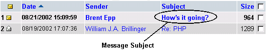
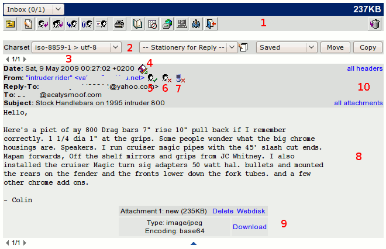

| To read a message, find the message in your
Inbox
, and click the Subject of the message.


This will bring to to a screen similar to the following on the right-hand side:
1 The message toolbar is for actions to perform on the current message.
2 When reading a message, there's a control bar
along the top or bottom of the screen to change the Charset, select a
Stationery text for replying and select folders for Move or Copy.
3 The message browser is a small toolbar that allows you to
quickly browse through the different messages in the folder without
navigating to the folder.
4 Downloads the message to the local disk of your computer.
5 Import the address to the Address book.
6 Block the sender by adding the address to the Filterbook.
7 Deny messages from SMTP relay mail servers (bad practice). The address is added to the Filterbook.
8 The message is the text that the sender has sent you to read.
9 When there is an attachment added to the message, you can download it to your local disk and open it there with the proper application, save it on the WebDisk (if this feature is made available by your System Administrator) or simply delete it from the message.
10 The message headers contains the same information that is displayed in the
Inbox
. Click All Headers to display more detailed information about the headers. | ){kind=link}